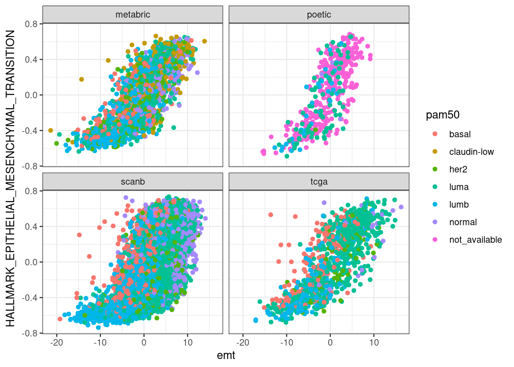
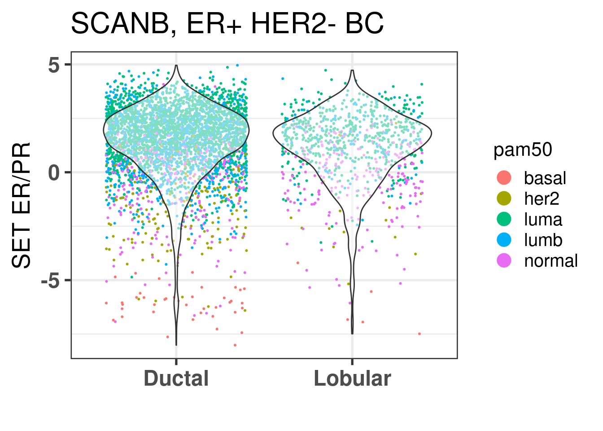
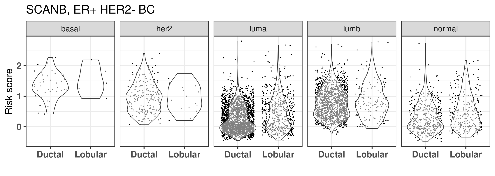
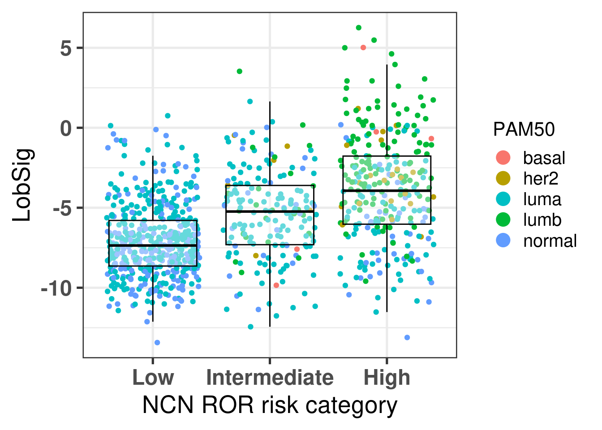

This is a file where we try different things using the molecular data. We keep it here in case anyone finds anything here interesting and would like to further discuss with us for potential collaborations.
* The library is already synchronized with the lockfile.
7.1 Using several pathways or just one pathway for GSVA
We now evaluate the effect of the scores for each pathway when using all the 53 pathways combined and each one individually. We use only TCGA for this step.
7.1.1 One vs all
We now calculate the scores for each gene set individually.
It seems they are all positively correlated, so one could calculate the scores basically using just one gene set with exception of some of the gene sets.
7.2 Minimum number of samples for GSVA
According to the original GSVA paper, a minimum of 10 samples are necessary to have a good power when using GSVA. Since here we have at least 5 molecular subgroups, we hypothesize we need at least 50 samples to get a good score so we can compare across cohorts. We will try with different numbers of samples using TCGA, we start with 10, 25, 50 and 100 samples and we compare with the scores using the full dataset.
The conclusion we can take here is that depending on the gene set not even 150 samples is enough. For some only 25 patients is already enough, such as SET ER/PR, androgen response, estrogen response early and E2F targets.
Could we mix around 20 samples of SCANB together with more samples from TCGA and METABRIC to get the scores? Let us try to adress this question again. We are using the regressed data now here as this is the only way.
There is still some correlation but the scores are shrinked in the end.
7.3 Normalization strategy
We can also try another way of normalizing, namely for each sample we can z scale it.
And now we can visualize the results.
Figure 7.1: PCA projections colored by different factors and organized by different components. (A) Plot of the first two components colored by cohort. (B) Plot of the first two components colored by ER status. (C) Plot of the second and third components colored by cohort. (D) Plot of the second and third components colored by ER status. (E) Plot of the second and third components colored by PAM50. (F) Plot of the second and third components colored by INTCLUST, only METABRIC has an assigned value for this variable, NAs are TCGA samples.
We see that samples are well embedded as well.
Figure 7.2: PCA embedding colored by cohort. The components used are the first and second components.
SCANB and POETIC are in between as expected and they are closer to their sequencing technology. Interestingly the variation for SCANB and TCGA are compressed in the PC1 vs PC2 axis compared to METABRIC and POETIC.
Figure 7.3 shows that the SCANB samples are also well mixed regarding the clinical factors, including the \(SET_{ER/PR}\) signature.
Figure 7.3: PCA embedding of all samples from TCGA, SCANB and METABRIC. (A) Colored by cohort, (B) colored by ER status, (C) colored by PAM50 molecular subtype, (D) colored by the \(SET_{ER/PR}\) signature and only SCANB samples.
In the end normalizing by scaling the sample before doing any embedding works as well. Though the embedding seems to be more compressed. I would argue that the qPCR-like normalization gives a bit better embedding.
7.4 genefu
With genefu it is possible to calculate scores from comercially available signatures. Here we try to use it on SCANB, METABRIC and TCGA. Moreover, we can start with ABiM, as this dataset has the gold standard ROR score obtained from nCounter data. This is a good way of validating the pipeline.
We start by comparing the molecular subtypes:
FALSE TRUE
14 86
86 out of 100 were correctly called. Here we are using the gold standard wich is the molecular subtype called from FT samples. The normal like subtype is not available from the FT prosigna assay. So we now compare the results with the SSP obtained from the SCANB team.
Below is the confusion matrix to see which subtypes were misclassified.
Confusion Matrix and Statistics
Reference
Prediction Basal Her2 LumB LumA Normal
Basal 13 0 0 0 0
Her2 0 8 0 0 0
LumB 1 1 33 1 0
LumA 1 0 7 32 0
Normal 1 0 0 2 0
Overall Statistics
Accuracy : 0.86
95% CI : (0.7763, 0.9213)
No Information Rate : 0.4
P-Value [Acc > NIR] : < 2.2e-16
Kappa : 0.7965
Mcnemar's Test P-Value : NA
Statistics by Class:
Class: Basal Class: Her2 Class: LumB Class: LumA
Sensitivity 0.8125 0.8889 0.8250 0.9143
Specificity 1.0000 1.0000 0.9500 0.8769
Pos Pred Value 1.0000 1.0000 0.9167 0.8000
Neg Pred Value 0.9655 0.9891 0.8906 0.9500
Prevalence 0.1600 0.0900 0.4000 0.3500
Detection Rate 0.1300 0.0800 0.3300 0.3200
Detection Prevalence 0.1300 0.0800 0.3600 0.4000
Balanced Accuracy 0.9062 0.9444 0.8875 0.8956
Class: Normal
Sensitivity NA
Specificity 0.97
Pos Pred Value NA
Neg Pred Value NA
Prevalence 0.00
Detection Rate 0.00
Detection Prevalence 0.03
Balanced Accuracy NA
All luminal A were predicted correctly. Some normal like were predicted to be luminal A or basal and Her2. There were some mismatches for the LumB, that were misclassified as LumA. Still it is ok.
Let us now calculate the ROR for the ABiM cohort.
Figure 7.4: Correlation between ROR obtained from prosigna assay and R package genefu
The correlation is relatively good and respects the molecular subtypes in general. The ROR obtained from genefu for some luminal B are not quite right as they are below 50.
We now move on to the other signatures: Mammaprint, EndoPredict (EP) and OncotypeDX Risk Score (RS).
Figure 7.5: Correlation between ROR obtained from prosigna assay and the mammaprint signature obtained from the R package genefu
Figure 7.5 shows the correlation between the mammaprint signature (named GENE70) and the ROR from prosigna.
Let us now compare the GENE70 signature with the risk score developed in the previous chapters. We use the ABiM 100 cohort to make the comparison. One side note, we are using only 51 out of the 70 probes available in the package. 15 probes don’t have any corresponding symbol. Out of the available genes, some are duplicated. For the duplicated genes, the correlation coefficients are all similar, so we can select just the first ocurrence in the list.
There is a good correlation between the two signatures, suggesting that the Mammaprint signature is somehow based on the position of the samples in the molecular landscape.
We now proceed and calculate the mammaprint scores for SCANB and METABRIC as well and only for ER+ BC samples.
Figure 7.6: Embedding of ER+ BC samples colored by the mammaprint score.
We see that the pattern is very close to what we have from the risk score created in the previous chapter. The figure below shows the correlation between mammaprint and the risk score once again.
Now for OncotypeDX:
Figure 7.7: Correlation between oncotypeDX and R package genefu
There is also a correlation between the risk score and oncotypeDX. The paper https://www.nature.com/articles/s41523-022-00492-0#Sec8 also used the genefu for calculating the oncotypeDX.
7.4.1 genefu and AIMS
Here we try to use AIMS to calculate the PAM50 subtypes for the and compare with the results obtained previously. We want to compare the classifications with the molecular landscape.
The confusion matrix below show the results of the AIMS PAM50 as the predicted and the reference is the PAM50 subtypes obtained from the SCANB team.
Confusion Matrix and Statistics
Reference
Prediction luma her2 normal lumb basal
luma 2301 61 51 664 0
her2 9 627 16 200 4
normal 724 37 830 6 11
lumb 17 17 0 938 0
basal 0 75 14 0 614
Overall Statistics
Accuracy : 0.7359
95% CI : (0.7255, 0.746)
No Information Rate : 0.4228
P-Value [Acc > NIR] : < 2.2e-16
Kappa : 0.6411
Mcnemar's Test P-Value : NA
Statistics by Class:
Class: luma Class: her2 Class: normal Class: lumb
Sensitivity 0.7542 0.76744 0.9111 0.5188
Specificity 0.8137 0.96421 0.8766 0.9937
Pos Pred Value 0.7478 0.73248 0.5162 0.9650
Neg Pred Value 0.8188 0.97013 0.9856 0.8607
Prevalence 0.4228 0.11322 0.1262 0.2506
Detection Rate 0.3189 0.08689 0.1150 0.1300
Detection Prevalence 0.4264 0.11863 0.2228 0.1347
Balanced Accuracy 0.7839 0.86583 0.8938 0.7563
Class: basal
Sensitivity 0.97615
Specificity 0.98649
Pos Pred Value 0.87340
Neg Pred Value 0.99770
Prevalence 0.08717
Detection Rate 0.08509
Detection Prevalence 0.09742
Balanced Accuracy 0.98132
We see that there is a big misclassification from luminal A samples to normal like samples and several luminal B are misclassified as luminal A.
The plot below shows the coloring by the reference PAM50 and the predicted by AIMS.
Figure 7.8: SCANB embedding stratified by PAM50 algorithms by both the ones provided by the SCANB (SSP) and the AIMS algorithm
On the left there is the coloring for the AIMS algorithm and on the right from the reference. We see the missclassified samples are not randomly misclassified, they are on the boundaries.
The plot below shows the maximum probability score for each sample individually.
The majority of samples have probabilities of either 1 or 0. Not so often in between.
And the figure below shows the confusion matrix for the ABIM cohort.
Confusion Matrix and Statistics
Reference
Prediction luma lumb her2 normal
luma 28 17 1 3
lumb 0 16 0 0
her2 0 0 10 0
normal 2 0 2 2
Overall Statistics
Accuracy : 0.6914
95% CI : (0.5789, 0.7893)
No Information Rate : 0.4074
P-Value [Acc > NIR] : 2.253e-07
Kappa : 0.5401
Mcnemar's Test P-Value : NA
Statistics by Class:
Class: luma Class: lumb Class: her2 Class: normal
Sensitivity 0.9333 0.4848 0.7692 0.40000
Specificity 0.5882 1.0000 1.0000 0.94737
Pos Pred Value 0.5714 1.0000 1.0000 0.33333
Neg Pred Value 0.9375 0.7385 0.9577 0.96000
Prevalence 0.3704 0.4074 0.1605 0.06173
Detection Rate 0.3457 0.1975 0.1235 0.02469
Detection Prevalence 0.6049 0.1975 0.1235 0.07407
Balanced Accuracy 0.7608 0.7424 0.8846 0.67368
We see here that in this case that there are several luminal B samples missclassified as luminal A.
The misclassified samples from AIMS they really seem to be on the top region together with the luminal A. Some of the normal samples are even in the luminal A region.
And another validation is using the normal cohort. Below is the number of all predicted molecular subtypes.
Normal
66
All samples are normal-like as expected, since they are normal.
7.5 nanostring signatures
In this section we try the nanostring panel signatures provided by the Breast Cancer 360 test. We will compare some of the signatures by using GSVA on the original datasets and by calculating the sum of the gene expression levels of the genes when regressing out the 1st, 2nd and 5th components.
The table below shows the number of genes available for each signature and each dataset. In general it seems that all signatures have over 70% of the genes available, a good indication.
pathway
tcga
scanb
metabric
poetic
n
average_percentage
adhesion_and_migration
65
61
68
83
83
0.83
angiogenesis
27
27
29
33
34
0.85
antigen_presentation
20
19
19
19
21
0.92
apoptosis
7
7
5
9
9
0.78
cytokine_and_chemokine_signaling
38
29
37
47
50
0.76
dna_damage_repair
126
108
118
133
143
0.85
emt
72
71
63
82
85
0.85
er_signaling
27
25
24
25
27
0.94
epigenetic_regulation
16
16
14
17
18
0.88
hedgehog
14
10
17
20
20
0.76
immune_infiltration
24
21
23
34
34
0.75
jak_stat
37
36
35
45
47
0.81
mapk
67
61
68
95
100
0.73
notch
21
19
16
21
22
0.88
pi3k
72
67
63
91
96
0.76
proliferation
121
113
114
136
144
0.84
stromal_markers
6
6
6
6
6
1
subtypes
69
63
62
69
70
0.94
tgf_beta
47
47
42
53
57
0.83
transcriptional_misregulation
44
37
44
61
63
0.74
triple_negative_biology
38
32
41
49
50
0.8
tumor_metabolism
15
15
14
14
15
0.97
wnt
37
34
44
51
51
0.81
internal_reference_gene
18
18
16
17
18
0.96
We now compare the scores obtained by GSVA on the datasets and see how they relate with nanostring scores obtained with the regressed data.
First we compare GSVA SET ER/PR with ER signaling obtained by the scoring procedure when regressing the data.
Next we compare EMT, G2M with proliferation and PI3K signaling.

In general there is a correlation but the scores are not so well correlated and they are noisy. One that works fairly well is the ER signaling score, but the others not so well. The proliferation score barely shows any difference between luminal A and B patients in any of the cohorts.
Perhaps if we calculate the scores using the hallmarks pathways the scores are better correlated, since they are the same gene sets.
Below we plot the correlation between the proliferation pathway using GSVA and the regressed scoring strategy for the TCGA cohort.
It is perfectly correlated.
And for ER signaling:
Also it is very much correlated. So the problem in the end is comparing the hallmarks signatures with the nanostring. But interestingly the nanostring proliferation signature was not good to pick up the differences between luminal A and B.
7.6 Risk stratification and the molecular landscape
One common problem in the clinics is what to do with patients that are in the so called intermediate risk group. Here we use the SSP classification from the SCANB team to check what is the position of these patients in the molecular landscape.
Figure 7.9: Embedding of the SCANB samples colored by their predicted ROR risk category.
Figure 7.9 shows that the embedding detects the positions where the intermediate risk patients are, namely they are in the intersection of the luminal A and B subtypes.
And Figure 7.10 below shows that there is a shift in PC4 for the intermediate to the high risk group, which makes sense as this is exactly where the distinction between luminal A and B are.
Figure 7.10: Distribution of the principal components for the different risk groups defined by the SSP ROR scores.
7.7 Late distant recurrence: trying to find biomarkers
One of the key problems in breast cancer research is finding patients that will develop late recurrence. Here we use METABRIC as it has a long follow-up history. We start by plotting the embedding of all METABRIC patients that had a followup longer than 10 years and received only ET. We then try to predict which patients recurr or not based on the molecular data by using lasso regression. For this we use the package glmnet that provides such functionality.
In general there is no distinction in terms of the molecular landscape among the patients that recurred, both in terms of molecular subtype and position in the molecular landscape.
We now compare their molecular scores.
Even here we don’t see much difference. Unless there is some kind of linear combination of pathways, I don’t think it would be possible to classify these two groups by using only transcriptomic data and these pathways. In any case we proceed now with the lasso regression using the 50 pathways.
We see that actually it does not work. And when we predict all the samples are predicted as there is no recurrence.
.
no
407
This is probably because of the unbalanced dataset. Next we try with random forest as well.
Call:
randomForest(formula = as.factor(is_there_recurrence) ~ ., data = et_metabric_late_data[, c("is_there_recurrence", pathways_to_compare, "AGE_AT_DIAGNOSIS", "LYMPH_NODES_EXAMINED_POSITIVE", "npi")], ntree = 500)
Type of random forest: classification
Number of trees: 500
No. of variables tried at each split: 7
OOB estimate of error rate: 17.44%
Confusion matrix:
no yes class.error
no 336 3 0.008849558
yes 68 0 1.000000000
That is not the case, still we can’t predict if a patient will develop recurrence or not in this cohort.
7.8 Correlation of pathways with proliferation
One thing that is very common is defining a gene signature and then using this gene signature to calculate survival analysis. The thing is, proliferation related genes are pretty much present in almost any signature and hence all these pathways are correlated to G2M and E2F to some extent (Venet, Dumont, and Detours 2011).
Here we calculate the pathway scores by using the regressed data and do all pairwise comparison of some of the most important pathways to see their correlations.
First we see that G2M and E2F are encoding basically the same information. PI3K AKT MTOR, AR and the Biocarta HER2 and SET ER/PR are all correlated to some extent to proliferation. Surprisingly the two HER2 signaling scores are not able to distinguish the HER2 subtype. The SET ER/PR correlation with G2M is possibly explained by the fact that the basal molecular subtype has higher G2M and lower ER signaling compared to luminal A and B.
7.9 ILC and position in the molecular landscape
Invasive lobular carcinoma is a subtype of ER+ BC. They tend to respond better to ET in the short term but they recurr after 20 years. Here we just show where the ILC BC lie in the molecular landscape.
Figure 7.11: Embedding of the lobular samples from SCANB on top METABRIC and TCGA
We see that they are mostly in the normal and luminal A region. Still there are several samples that are luminal B, meaning they are more proliferative.
Is there any difference in the SET ER/PR for lobulars when comparing to ER+ HER2- Ductal carcinomas?

They seem to be the same, also when checking the risk score calculated for all patients, the lobular patients don’t seem to have a decreased risk overall, it is mostly because they are in the same region of the molecular landscape. Interestingly there is way less luminal B patients in the lobular, but still their distributions are very similar.
And we also plot by intrinsic molecular subtype.

We also compare EMT.
EMT is very similar across both histological subtypes. The plot below shows the densities for ER percentage, notice how the two overlap.
We now check the lobular signature LobSig that is touted to be superior to OncotypeDX, Prosigna’s PAM50 and other signatures. In total, 63% of the genes are available here. Based on my experience this is already a good number to make comparisons. For example, G2M checkpoint has 71% of the genes available, estrogen response early has 66%.
We see that the LobSig is highgly correlated with G2M checkpoint and also the risk of recurrence score obtained from PAM50. The random 200 is a signature of 200 random genes that works as a negative control.
The figure below shows the distinction of the signature among the 3 different risk categories from ROR.

There is an increase in the score as expected based on the previous results that show where the intermediate risk group is according to the molecular landscape.
Lastly we check the CDH1 expression levels on the regressed data to see if the differences are still captured upon the whole process.
The differences are still captured, and CDH1 is decreased when comparing lobular vs NST. Note also that the difference seems to be the biggest in the luminal B subtype.
We also check the PC3 and PC4 loadings for CDH1, to see how important this gene is in the molecular landscape.
gene PC3 PC4
1 CDH1 0.0002872375 0.01509738
PC4 has a relatively high value which puts it into the 95 percentile as shown below.
[1] 0.9547769
Next we can plot the lobular samples from Ciriello’s paper and color by the 3 subtypes they found. Note here that there is a mismatch between the cbioportal data and what is found in the original papers (Curtis et al. 2012). We will use the Curtis 2012 annotation as this is what matches Ciriello’s paper. Surprisingly the mismatch is not a systematic issue, rather 88 ILC samples are matching and the non-matching samples are NST but the other info matches usually, such as NPI.
Figure 7.12: Embedding of the lobular samples from METABRIC on top SCANB and TCGA
The table below shows the number of subtypes for each molecular subtype. In general there are samples in each one of the molecular subtypes. The reactive-like is actually more enriched in the normal region.
And below is a plot of the lobular samples from Ciriello/Curtis with the molecular subtypes defined by Ciriello.
It seems that more proliferative saaples are in the luminal B region whereas the Reactive-like and Immune-related are not so distinguishable, they are in the luminal A region.
Some of the samples are NST on cbioportal and Lobular on Curtis. We selected the following samples and checked on cbioPortal (https://www.cbioportal.org/study/clinicalData?id=brca_metabric) their histologic subtype directly.
The figure below shows the first two components for SCANB stratified by the library protocol used in the study. We see that PC2 is partially capturing the differences due to library protocol.
7.11 Distance in 4th component for POETIC
We have seen previosuly that there is a bigger difference in between the matched samples in the responder than to non-responder patients. Hallmark G2M checkpoint is one of the signatures driving the PC4, meaning that the position wrt the fourth component might be used to define a new response status.
Below we plot the matched samples for all non responder patients with no change at all in Ki67 (change >= 0%) and their respective positions in the molecular landscape.
Now we do the same for the top responders (change in Ki67 \(\leq\) -90%).
In general the distance for the responder samples seem to be higher and not only that we see that the surgery sample goes to the bottom part of the embedding, suggesting that the reduction of the proliferation is reflected in the molecular landscape.
Curtis, Christina, and Sohrab P. Shah, Suet-Feung Chin, Gulisa Turashvili, Oscar M. Rueda, Mark J. Dunning, Doug Speed, et al. 2012. “The Genomic and Transcriptomic Architecture of 2, 000 Breast Tumours Reveals Novel Subgroups.”Nature 486 (7403): 346–52. https://doi.org/10.1038/nature10983.
Venet, David, Jacques E. Dumont, and Vincent Detours. 2011. “Most Random Gene Expression Signatures Are Significantly Associated with Breast Cancer Outcome.” Edited by Isidore Rigoutsos. PLoS Computational Biology 7 (10): e1002240. https://doi.org/10.1371/journal.pcbi.1002240.
Source Code
# Tests and tries This is a file where we try different things using the molecular data.We keep it here in case anyone finds anything here interesting and would liketo further discuss with us for potential collaborations.```{r}renv::restore()library(tidyverse)library(ggplot2)library(PCAtools)library(singscore)library(SummarizedExperiment)library(survival)library(genefu)library(caret)source("../R/utils.R")source("../R/first_run.R")# the following script load all data necessary to run the chunks.# the data is generated from this quarto document itself, therefore# if you are running this documents the first time and don't have the# files, comment the following lines. Moreover, if this is your first# time running the document, you should run all chunks, to generate # all the necessary files, if you don't have them. Once all files # are saved and available in the respective folder, the following# lines can be executed. if (first_run){ load_at_setup <-FALSE} else { load_at_setup <-TRUE}name_document <-"trying"sapply(paste0("../../results/", c("plots", "rds_files", "tables"), "/", name_document), dir.create,showWarnings =FALSE,recursive =TRUE)source("../R/load_rds_files.R")# by setting the dev to png and pdf, this saves the figures in a specific# folder in both formats. moreover, since png is coming first, it shows# this figure when rendering the html. What is nice about this is that it# inherits the properties from the chunk to save the figure, so no need# to use ggplot2::ggsave to save the plots. this also works knitr::opts_chunk$set(dev =c('png', 'pdf'))options(bitmapType ='cairo')p4_pathways <- msigdbr::msigdbr() %>% dplyr::filter(gs_name %in%c("WILCOX_RESPONSE_TO_PROGESTERONE_UP","GOBP_RESPONSE_TO_PROGESTERONE","BIOCARTA_HER2_PATHWAY","KEGG_ERBB_SIGNALING_PATHWAY" ))gene_sets_prog <- dplyr::bind_rows( gene_sets, p4_pathways)gene_sets_ <-sapply( gene_sets_prog$gs_name %>% unique,function(x, gene_sets) gene_sets %>% dplyr::filter(gs_name == x) %>% dplyr::pull(gene_symbol),gene_sets = gene_sets_prog,USE.NAMES =TRUE,simplify =FALSE)datasets$poetic$sample_name <-colnames(datasets$poetic)```## Using several pathways or just one pathway for GSVAWe now evaluate the effect of the scores for each pathway when using all the53 pathways combined and each one individually. We use only TCGA for this step.```{r}gene_expression <-assay(datasets$tcga, which_exp$tcga) %>% as.matrixall_scores <-colData(datasets$tcga) %>% data.frame```### One vs allWe now calculate the scores for each gene set individually.```{r, eval = first_run}set.seed(187293)samples_one_pathway <-sample(1:ncol(gene_expression), size =200)gsva_one_pathway <-lapply( gene_sets_[1:2],function(x){ GSVA::gsva(expr = gene_expression[, samples_one_pathway], gset.idx.list =list(x),verbose =FALSE ) })saveRDS( gsva_one_pathway,"../../results/rds_files/trying/gsva_one_pathway.rds")``````{r}gsva_one_pathways <-Reduce(rbind, gsva_one_pathway) %>% t %>% data.frame %>%`colnames<-`(names(gsva_one_pathway)) %>% tibble::rownames_to_column(var ="sample_name") %>% tidyr::pivot_longer(cols = dplyr::all_of(names(gsva_one_pathway)),names_to ="pathway",values_to ="one_gsva" ) %>% dplyr::inner_join( merged_col_data %>% tidyr::pivot_longer(cols = dplyr::all_of(intersect(names(gsva_one_pathway),colnames(merged_col_data) )),names_to ="pathway",values_to ="gsva" ), .,by =c("sample_name", "pathway") ) ``````{r, fig.width=20, fig.height=16, dev="png"}gsva_one_pathways %>% ggplot2::ggplot(aes(x = one_gsva, y = gsva, color = pam50 )) + ggplot2::geom_point() + ggplot2::geom_abline(intercept =0, slope =1) + ggplot2::facet_wrap(~pathway, scales ="free") + ggplot2::theme_bw()```It seems they are all positively correlated, so one could calculate the scores basically using just one gene set with exception of some of thegene sets. ## Minimum number of samples for GSVAAccording to the original GSVA paper, a minimum of 10 samples are necessaryto have a good power when using GSVA. Since here we have at least 5 molecular subgroups, we hypothesize we need at least 50 samples to get a good score so we can compare across cohorts. We will try withdifferent numbers of samples using TCGA, we start with 10, 25, 50 and100 samples and we compare with the scores using the full dataset.```{r}nb_of_samples <-c(10, 25, 40, 50, 100, 150)``````{r, eval = first_run}seeds <-c(12, 123, 1234, 21345, 12, 123)gsva_scores <-mapply(function(nb_samples, seed, df, gene_sets, col_data){set.seed(seed) patients <- col_data %>% dplyr::slice_sample(n = nb_samples) %>% dplyr::pull(sample_name) GSVA::gsva( df[, patients], gene_sets,verbose =FALSE ) },nb_samples = nb_of_samples,seed = seeds,MoreArgs =list(df = gene_expression, gene_sets = gene_sets_,col_data =colData(datasets$tcga) %>% data.frame))saveRDS( gsva_scores, "../../results/rds_files/trying/gsva_scores_trying.rds")``````{r}names(gsva_scores) <-paste0("nb_", nb_of_samples)gsva_scores_ <-lapply( gsva_scores, \(x) data.frame(t(x)) %>% tibble::rownames_to_column(var ="sample_name")) %>% dplyr::bind_rows(.id ="nb_of_samples") %>% dplyr::mutate(nb_of_samples =factor(nb_of_samples, names(gsva_scores))) %>% tidyr::pivot_longer(cols =setdiff(names(gene_sets_), p4_pathways$gs_name %>% unique),names_to ="pathway",values_to ="gsva_sub" ) %>% dplyr::inner_join( merged_col_data %>% tidyr::pivot_longer(cols =setdiff(names(gene_sets_), p4_pathways$gs_name %>% unique),names_to ="pathway",values_to ="gsva_full" ), .,by =c("sample_name", "pathway") )``````{r, fig.width = 50, fig.height=15}gsva_scores_ %>% dplyr::filter(pathway %in%names(gene_sets_)[1:25]) %>% ggplot2::ggplot(aes(x = gsva_full, y = gsva_sub, color = pam50 )) + ggplot2::geom_point() + ggplot2::geom_abline(intercept =0, slope =1) + ggplot2::facet_grid(nb_of_samples ~ pathway, scales ="free") + ggplot2::theme_bw()``````{r, fig.width = 50, fig.height=15}gsva_scores_ %>% dplyr::filter(pathway %in%names(gene_sets_)[25:(length(names(gene_sets_))-2)]) %>% ggplot2::ggplot(aes(x = gsva_full, y = gsva_sub, color = pam50 )) + ggplot2::geom_point() + ggplot2::geom_abline(intercept =0, slope =1) + ggplot2::facet_grid(nb_of_samples ~ pathway, scales ="free") + ggplot2::theme_bw()```The conclusion we can take here is that depending on the gene set not even 150samples is enough. For some only 25 patients is already enough, such as SET ER/PR, androgen response, estrogen response early and E2F targets.Could we mix around 20 samples of SCANB together with more samples from TCGA and METABRIC to get the scores? Let us try to adress this questionagain. We are using the regressed data now here as this is the only way.```{r, eval = first_run}scanb_samples <- df_pca_coordinates %>% dplyr::filter(cohort =="scanb") %>% dplyr::slice_sample(n =10) %>% dplyr::pull(sample_name)gsva_scores_embeddings_scanb_within_tcga_regressed <- GSVA::gsva( df_pcs_regressed[ , merged_col_data %>% dplyr::filter(cohort %in%c("tcga", "metabric")) %>% dplyr::slice_sample(n =500) %>% dplyr::pull(sample_name) %>%c(., scanb_samples) ], gene_sets_,parallel.sz =10,verbose =FALSE)saveRDS( gsva_scores_embeddings_scanb_within_tcga_regressed,"../../results/rds_files/trying/gsva_scores_embeddings_scanb_within_tcga_regressed.rds")``````{r}sub_scanb_scores <- gsva_scores_embeddings_scanb_within_tcga_regressed %>% t %>% data.frame %>% tibble::rownames_to_column(var ="sample_name") %>% tidyr::pivot_longer(cols =setdiff(names(gene_sets_), p4_pathways$gs_name %>% unique),names_to ="pathway",values_to ="gsva_sub" ) %>% dplyr::inner_join( merged_col_data %>% tidyr::pivot_longer(cols =setdiff(names(gene_sets_), p4_pathways$gs_name %>% unique),names_to ="pathway",values_to ="gsva_full" ), .,by =c("sample_name", "pathway") )``````{r, fig.width=20, fig.height=16}sub_scanb_scores %>% dplyr::filter(cohort =="scanb") %>% ggplot2::ggplot(aes(x = gsva_sub,y = gsva_full,color = cohort )) + ggplot2::geom_point() + ggplot2::geom_abline(intercept =0, slope =1) + ggplot2::facet_wrap(~pathway) + ggplot2::theme_bw()```There is still some correlation but the scores are shrinked in the end. ## Normalization strategyWe can also try another way of normalizing, namely for each sample wecan z scale it.```{r}set.seed(1329)samples_for_training <- merged_col_data %>% dplyr::filter(cohort %in% which_cohorts_training) %>% dplyr::pull(sample_name) %>%sample(., size =1000) common_genes <-Reduce(intersect, lapply(datasets, rownames))stable_genes <-intersect(stable_genes, common_genes)# and now we can perform the molecular embeddingtraining_set <-lapply( datasets_normalized[which_cohorts_training], function(sum_exp, i, genes_for_pca) assay(sum_exp[genes_for_pca, ], i = i) %>%data.frame(check.names =FALSE), i ="znorm",genes_for_pca = common_genes) %>% dplyr::bind_cols() %>% .[, samples_for_training]pca_fit_znorm <- PCAtools::pca( training_set,metadata = dplyr::bind_rows(lapply( datasets_normalized[which_cohorts_training],function(df){colData(df) %>% data.frame %>% dplyr::filter(sample_name %in%colnames(training_set)) } ),.id ="cohort" ) %>% .[colnames(training_set), ],center =FALSE,scale =FALSE)```And now we can visualize the results.```{r, fig.width=14, fig.height=16}#| label: fig-pca-embeddings-3#| fig-cap: PCA projections colored by different factors and organized#| by different components. (A) Plot of the first two components colored#| by cohort. (B) Plot of the first two components colored by ER status.#| (C) Plot of the second and third components colored by cohort. #| (D) Plot of the second and third components colored by ER status.#| (E) Plot of the second and third components colored by PAM50.#| (F) Plot of the second and third components colored by INTCLUST, only#| METABRIC has an assigned value for this variable, NAs are TCGA samples.plots_pca_fit <-list()point_size <-2plots_pca_fit$pc1_pc2_cohort <- PCAtools::biplot( pca_fit_znorm,colby ="cohort",lab =NULL, legendPosition ="right",x ="PC1",y ="PC2",title ="First two components colored by cohort",subtitle ="Only 1000 training samples",pointSize = point_size)plots_pca_fit$pc1_pc2_er_status <- PCAtools::biplot( pca_fit_znorm,colby ="er_status",lab =NULL, legendPosition ="right",x ="PC1",y ="PC2",title ="First two components colored by ER status",subtitle ="Only 1000 training samples",pointSize = point_size)plots_pca_fit$pc2_pc3_cohort <- PCAtools::biplot( pca_fit_znorm,colby ="cohort",lab =NULL, legendPosition ="right",x ="PC2",y ="PC3",title ="Second and third components colored by cohort",subtitle ="Only 1000 training samples",pointSize = point_size)plots_pca_fit$pc2_pc3_er_status <- PCAtools::biplot( pca_fit_znorm,colby ="er_status",lab =NULL, legendPosition ="right",x ="PC2",y ="PC3",title ="Second and third components colored by ER status",subtitle ="Only 1000 training samples",pointSize = point_size)plots_pca_fit$pc2_pc3_pam50 <- PCAtools::biplot( pca_fit_znorm,colby ="pam50",lab =NULL, legendPosition ="right",x ="PC2",y ="PC3",title ="Second and third components colored by PAM50",subtitle ="Only 1000 training samples",pointSize = point_size)plots_pca_fit$pc2_pc3_pam50 <- plots_pca_fit$pc2_pc3_pam50 + ggplot2::scale_color_manual(values =get_colors_pam50(pca_fit$metadata))plots_pca_fit$pc2_pc3_intclust <- PCAtools::biplot( pca_fit_znorm,colby ="INTCLUST",lab =NULL, legendPosition ="right",x ="PC2",y ="PC3",title ="Second and third components colored by INTCLUST",subtitle ="Only 1000 training samples",pointSize = point_size)plots_pca_fit$pc3_pc4_pam50 <- PCAtools::biplot( pca_fit_znorm,colby ="pam50",lab =NULL, legendPosition ="right",x ="PC3",y ="PC4",title ="Third and fourth components colored by PAM50",subtitle ="Only 1000 training samples",pointSize = point_size) plots_pca_fit$pc3_pc4_pam50 <- plots_pca_fit$pc3_pc4_pam50 + ggplot2::scale_color_manual(values =get_colors_pam50(pca_fit$metadata))plots_pca_fit$pc3_pc4_cohort <- PCAtools::biplot( pca_fit_znorm,colby ="cohort",lab =NULL, legendPosition ="right",x ="PC3",y ="PC4",title ="Third and fourth components colored by cohort",subtitle ="Only 1000 training samples",pointSize = point_size)cowplot::plot_grid(plotlist = plots_pca_fit, ncol =2, labels ="AUTO")``````{r}datasets_pca_coordinates_znorm <-lapply( datasets_normalized, get_pca_coordinates,pca_fit = pca_fit_znorm,genes_for_pca =rownames(pca_fit_znorm$loadings))df_pca_coordinates_znorm <- datasets_pca_coordinates_znorm %>%do.call(rbind, .) %>% data.frame %>% tibble::rownames_to_column(var ="sample_name") %>% dplyr::inner_join( ., merged_col_data,by ="sample_name" )``````{r}plot_pca_coordinates( df_pca_coordinates_znorm %>% dplyr::slice(1:n()),color ="cohort",x ="PC3",y ="PC4",size =1,base_size =10,title =paste0("Embedding of all samples from TCGA,\n","METABRIC and SCANB" )) + ggplot2::scale_color_viridis_d() + ggplot2::theme_bw(base_size =15) +change_plot_aes_point() +change_guides_point()```We see that samples are well embedded as well. ```{r}#| label: fig-pca-scanb-pc1-2#| fig-cap: PCA embedding colored by cohort. The components used are the#| first and second components.plot_pca_coordinates( df_pca_coordinates_znorm,color ="cohort",x ="PC1",y ="PC2",size =1,base_size =10,title =paste0("Embedding of all samples from TCGA,\n","METABRIC and SCANB" )) + ggplot2::theme_bw(base_size =15) +change_plot_aes_point() +change_guides_point()```SCANB and POETIC are in between as expected and they are closerto their sequencing technology. Interestingly the variation for SCANB and TCGA are compressed in the PC1 vs PC2 axis comparedto METABRIC and POETIC.@fig-pca-scanb-er-pam50-2 shows that the SCANB samples are also well mixedregarding the clinical factors, including the $SET_{ER/PR}$ signature.```{r, fig.width=16, fig.height=14}#| label: fig-pca-scanb-er-pam50-2#| fig-cap: PCA embedding of all samples from TCGA, SCANB and METABRIC.#| (A) Colored by cohort,#| (B) colored by ER status, (C) colored by PAM50 molecular subtype,#| (D) colored by the $SET_{ER/PR}$ signature and only SCANB samples.size <-2base_size <-20plots_with_scanb <-sapply(c("cohort", "er_status", "pam50", "SET_ERPR", "HALLMARK_G2M_CHECKPOINT"), plot_pca_coordinates,df_pca = df_pca_coordinates_znorm %>% dplyr::filter( pam50 %in%c("luma", "lumb", "basal", "her2", "normal") & cohort !="poetic" ) %>% dplyr::slice(sample(1:n())),x ="PC3", y ="PC4",size = size,base_size = base_size,title =paste0("Embedding of all samples from TCGA,\n","METABRIC and SCANB" ),USE.NAMES =TRUE, simplify =FALSE)plots_with_scanb$cohort <- plots_with_scanb$cohort +change_plot_aes_point() +change_guides_point()plots_with_scanb$pam50 <- plots_with_scanb$pam50 + ggplot2::scale_color_manual(values =get_colors_pam50(plots_with_scanb$pam50$data) ) +change_plot_aes_point() +change_guides_point()plots_with_scanb$er_status <- plots_with_scanb$er_status + ggplot2::scale_color_viridis_d() + ggplot2::labs(color ="ER status") +change_plot_aes_point() +change_guides_point()plots_with_scanb$SET_ERPR <- df_pca_coordinates_znorm %>% dplyr::filter(cohort %in%c("scanb")) %>% ggplot2::ggplot(aes_string(x ="PC3", y ="PC4", z ="SET_ERPR")) + ggplot2::stat_summary_hex(bins =25) + ggplot2::scale_fill_viridis_c() + ggplot2::labs(title ="Embedding of SCANB only",fill =expression(SET[ER/PR]) ) + ggplot2::theme_bw(base_size = base_size) +change_plot_aes_point()plots_with_scanb$HALLMARK_G2M_CHECKPOINT <- df_pca_coordinates_znorm %>% dplyr::filter(cohort %in%c("scanb") & pam50 %in%c("luma", "lumb")) %>% ggplot2::ggplot(aes_string(x ="PC3", y ="PC4", z ="HALLMARK_G2M_CHECKPOINT")) + ggplot2::stat_summary_hex(bins =25) + ggplot2::scale_fill_viridis_c() + ggplot2::labs(title ="Embedding of SCANB, luminal A and B only",fill ="G2M" ) + ggplot2::theme_bw(base_size = base_size) +change_plot_aes_point()cowplot::plot_grid(plotlist = plots_with_scanb,ncol =2)```In the end normalizing by scaling the sample before doing any embeddingworks as well. Though the embedding seems to be more compressed. I would argue that the qPCR-like normalization gives a bit betterembedding. ## genefu With genefu it is possible to calculate scores from comercially available signatures. Here we try to use it on SCANB, METABRIC and TCGA. Moreover,we can start with ABiM, as this dataset has the gold standard ROR score obtained from nCounter data. This is a good way of validating thepipeline. ```{r}data(pam50.robust)abim_genefu_pam50 <- genefu::molecular.subtyping(sbt.model ="pam50",data =t(assay(abim_100, "log2fpkm")), annot = annotables::grch38 %>% dplyr::mutate(EntrezGene.ID = entrez,Gene.Symbol = symbol ),do.mapping =FALSE)abim_100$GENEFU.PAM50 <- abim_genefu_pam50$subtype```We start by comparing the molecular subtypes:```{r}table(abim_100$GENEFU.PAM50 == abim_100$ProsignaFT.Subtype)```86 out of 100 were correctly called. Here we are using the gold standard wichis the molecular subtype called from FT samples. The normal like subtype is notavailable from the FT prosigna assay. So we now compare the results with theSSP obtained from the SCANB team. Below is the confusion matrix to see which subtypes were misclassified. ```{r}caret::confusionMatrix( abim_100$GENEFU.PAM50,factor( abim_100$ProsignaFT.Subtype, levels =levels(abim_100$GENEFU.PAM50) ))```All luminal A were predicted correctly. Some normal like were predicted tobe luminal A or basal and Her2. There were some mismatches for the LumB, that were misclassified as LumA. Still it is ok. Let us now calculate the ROR for the ABiM cohort.```{r}#| label: fig-ror-genefu-abim#| fig-cap: Correlation between ROR obtained from prosigna assay and #| R package genefudata(pam50)ror_abim <- genefu::rorS(data =t(assay(abim_100, "log2fpkm")), annot = annotables::grch38 %>% dplyr::mutate(EntrezGene.ID = entrez,Gene.Symbol = symbol ),do.mapping =FALSE)abim_100$GENEFU.ROR <- ror_abim$scorecolData(abim_100) %>% data.frame %>% ggplot2::ggplot(aes(x = GENEFU.ROR, y = ProsignaFT.ROR, color = ProsignaFT.Subtype)) + ggplot2::geom_point() + ggplot2::geom_smooth(color ="black",method ="loess",formula ="y ~ x" ) + ggplot2::labs(title ="ABiM 100 cohort") + ggplot2::theme_bw(base_size =20) +change_plot_aes_point() +change_guides_point()```The correlation is relatively good and respects the molecular subtypesin general. The ROR obtained from genefu for some luminal B are not quite right as they are below 50. We now move on to the other signatures: Mammaprint, EndoPredict (EP) and OncotypeDX Risk Score (RS).```{r}#| label: fig-ror-mammaprint-genefu-abim#| fig-cap: Correlation between ROR obtained from prosigna assay and #| the mammaprint signature obtained from the R package genefuannot_abim <- annotables::grch38 %>% dplyr::mutate(EntrezGene.ID = entrez,Gene.Symbol = symbol ) %>% dplyr::filter(!duplicated(symbol)) %>% data.frame %>%`rownames<-`(.$symbol)data(sig.gene70)sig.gene70 <- sig.gene70 %>% dplyr::filter(!is.na(HUGO.gene.symbol)) %>% dplyr::distinct(HUGO.gene.symbol, .keep_all =TRUE) %>%`rownames<-`(.$HUGO.gene.symbol)erp_abim <-colData(abim_100) %>% data.frame %>% dplyr::filter(ER =="Positive") %>% dplyr::pull(sample_name)abim_100 <- abim_100[, erp_abim]mammaprint_abim <- genefu::gene70(data =t(assay(abim_100, "log2fpkm")), annot = annot_abim,do.mapping =FALSE,std ="robust",verbose =TRUE)abim_100$GENEFU.GENE70 <- mammaprint_abim$scorecolData(abim_100) %>% data.frame %>% ggplot2::ggplot(aes(x = GENEFU.GENE70, y = ProsignaFT.ROR, color = ProsignaFT.Subtype ) ) + ggplot2::geom_point() + ggplot2::geom_smooth(color ="black",method ="loess",formula ="y ~ x" ) + ggplot2::labs(title ="ABiM 100 cohort") + ggplot2::theme_bw(base_size =20) +change_plot_aes_point() +change_guides_point()```@fig-ror-mammaprint-genefu-abim shows the correlation between the mammaprint signature (named GENE70) and the ROR from prosigna. Let us now compare the GENE70 signature with the risk score developed in the previous chapters. We use the ABiM 100 cohort to make the comparison. One side note, we are using only 51 out of the 70 probes available in thepackage. 15 probes don't have any corresponding symbol. Out of the availablegenes, some are duplicated. For the duplicated genes, the correlation coefficients are all similar, so we can select just the first ocurrence in the list.```{r}coefs_risk_model <-readRDS("../../results/rds_files/risk_score/coefs_risk_model.rds")abim_100$risk_score <-calculate_risk_score( coefs_risk_model, abim_100_df_pca %>% dplyr::filter(sample_name %in%colnames(abim_100)),is_node =TRUE)colData(abim_100) %>% data.frame %>% ggplot2::ggplot(aes(x = GENEFU.GENE70, y = risk_score, color = ProsignaFT.Subtype ) ) + ggplot2::geom_point() + ggplot2::geom_smooth(color ="black",method ="loess",formula ="y ~ x" ) + ggplot2::theme_bw(base_size =20) + ggplot2::labs(title ="ABiM 100 cohort, ER+ BC only",y ="Risk score" ) +change_plot_aes_point() +change_guides_point()```There is a good correlation between the two signatures, suggesting that the Mammaprint signature is somehow based on the position of the samples inthe molecular landscape. We now proceed and calculate the mammaprint scores for SCANB and METABRIC as well and only for ER+ BC samples.```{r}mammaprint_datasets <-mapply(function(x, y){ genefu::gene70(data =t(assay(x, y)),annot = annot_abim,do.mapping =FALSE,std ="robust",verbose =TRUE )$score %>% data.frame %>%`colnames<-`(c("mammaprint")) %>% tibble::rownames_to_column(var ="sample_name") },x = datasets,y =c(which_exp, "poetic"="normalized_intensity"),USE.NAMES =TRUE,SIMPLIFY =FALSE) %>% dplyr::bind_rows(.id ="cohort")scanb_metabric_erp <- df_pca %>% dplyr::filter( cohort %in%c("scanb", "metabric") & er_status =="pos" ) %>% dplyr::inner_join( mammaprint_datasets,by =c("sample_name", "cohort") )``````{r, fig.width=10, fig.height=5}#| label: fig-met-scanb-mammaprint#| fig-cap: Embedding of ER+ BC samples colored by the mammaprint #| score.scanb_metabric_erp %>% ggplot2::ggplot(aes(x = PC3, y = PC4, z = mammaprint)) + ggplot2::stat_summary_hex(bins =20) + ggplot2::facet_wrap(~ cohort) + ggplot2::scale_fill_viridis_c() + ggplot2::labs(fill ="Mammaprint") + ggplot2::theme_bw(base_size =20)```We see that the pattern is very close to what we have from the risk score created in the previous chapter. The figure below shows the correlationbetween mammaprint and the risk score once again.```{r}endo_only_scanb <- df_pca %>% dplyr::filter(cohort =="scanb") %>% dplyr::mutate(node_status =ifelse( node_group =="N0", "neg","pos" )) %>% dplyr::mutate(node_status =factor( node_status, levels =c("neg", "pos") )) %>% dplyr::filter( TreatGroup =="Endo"&!is.na(rfs_status) &!is.na(rfs_months) & er_status =="pos"&!is.na(age) &!is.na(tumor_size) &!is.na(node_status) )endo_only_metabric <- df_pca %>% dplyr::filter(cohort =="metabric") %>% dplyr::mutate(TreatGroup = dplyr::case_when( HORMONE_THERAPY =="YES"& CHEMOTHERAPY =="YES"~"ChemoEndo", HORMONE_THERAPY =="YES"& CHEMOTHERAPY =="NO"~"Endo",TRUE~"Other" )) %>% dplyr::mutate(node_status =ifelse( LYMPH_NODES_EXAMINED_POSITIVE >0, "pos","neg" )) %>% dplyr::mutate(node_status =factor(node_status, levels =c("neg", "pos")),tumor_size = TUMOR_SIZE ) %>% dplyr::filter( HORMONE_THERAPY =="YES"& CHEMOTHERAPY =="NO"&!is.na(rfs_status) &!is.na(rfs_months) & er_status =="pos"&!is.na(age) &!is.na(tumor_size) &!is.na(node_status) )endo_scanb_metabric <- dplyr::bind_rows( endo_only_metabric, endo_only_scanb) %>% dplyr::inner_join( mammaprint_datasets,by =c("sample_name", "cohort") )endo_scanb_metabric$risk_score <-calculate_risk_score( coefs_risk_model, endo_scanb_metabric)``````{r, fig.width=14, fig.height=8}endo_scanb_metabric %>% dplyr::filter(pam50 !="claudin-low") %>% tidyr::pivot_longer(cols = dplyr::all_of(c("risk_score","HALLMARK_G2M_CHECKPOINT","SET_ERPR" )),values_to ="score",names_to ="pathway" ) %>% ggplot2::ggplot(aes(x = mammaprint, y = score, color = pam50)) + ggplot2::geom_point(alpha =0.5) + ggplot2::geom_smooth(method ="loess",formula = y ~ x,color ="black" ) + ggplot2::facet_wrap( cohort~pathway, scales ="free_y",labeller =as_labeller(c("scanb"="SCANB","metabric"="METABRIC","HALLMARK_G2M_CHECKPOINT"="G2M","SET_ERPR"="SET ER/PR","risk_score"="Risk score" )) ) + ggplot2::theme_bw(base_size =20) + ggplot2::scale_color_manual(values =get_colors_pam50(endo_scanb_metabric)) +change_plot_aes_point() +change_guides_point()```Now for OncotypeDX:```{r}#| label: fig-ror-genefu-abim-oncotype#| fig-cap: Correlation between oncotypeDX and #| R package genefudata(sig.endoPredict)data(sig.oncotypedx)ep_abim <- genefu::endoPredict(data =t(assay(abim_100, "log2fpkm")), annot = annot_abim,do.mapping =TRUE,verbose =TRUE)oncotypedx_abim <- genefu::oncotypedx(data =t(assay(abim_100, "log2fpkm")), annot = annot_abim,do.mapping =TRUE,verbose =TRUE,do.scaling =FALSE)abim_100$GENEFU.ONCOTYPEDX <- oncotypedx_abim$scorecolData(abim_100) %>% data.frame %>% ggplot2::ggplot(aes(x = GENEFU.ONCOTYPEDX, y = risk_score, color = ProsignaFT.Subtype ) ) + ggplot2::geom_point() + ggplot2::geom_smooth(color ="black",method ="loess",formula ="y ~ x" ) + ggplot2::theme_bw() +change_plot_aes_point() +change_guides_point()```There is also a correlation between the risk score and oncotypeDX.The paper https://www.nature.com/articles/s41523-022-00492-0#Sec8also used the genefu for calculating the oncotypeDX. ### genefu and AIMSHere we try to use AIMS to calculate the PAM50 subtypes for theand compare with the results obtained previously. We want to comparethe classifications with the molecular landscape.```{r}data(AIMSmodel)# we have to match the symbolsannot_aims <- annotables::grch38 %>% dplyr::select(entrez, symbol) %>% dplyr::rename(EntrezGene.ID = entrez) %>% dplyr::mutate(EntrezGene.ID =as.character(EntrezGene.ID)) %>% dplyr::filter(symbol %in%rownames(pdx_tpm)) %>% dplyr::filter(!duplicated(symbol)) %>% data.frame %>%`rownames<-`(.$symbol)pdx_tpm <- pdx_tpm[annot_aims$symbol, ]sbt_pdx_AIMS <- genefu::molecular.subtyping(sbt.model ="AIMS", data =assay(pdx_tpm, "log2tpm") %>% t,annot = annot_aims,do.mapping =TRUE)annot_aims_abim_100 <- annotables::grch38 %>% dplyr::select(entrez, symbol) %>% dplyr::rename(EntrezGene.ID = entrez) %>% dplyr::mutate(EntrezGene.ID =as.character(EntrezGene.ID)) %>% dplyr::filter(symbol %in%rownames(abim_100)) %>% dplyr::filter(!duplicated(symbol)) %>% data.frame %>%`rownames<-`(.$symbol)abim_100 <- abim_100[annot_aims_abim_100$symbol, ]sbt_aim_100_AIMS <- genefu::molecular.subtyping(sbt.model ="AIMS", data =assay(abim_100, "log2fpkm") %>% t,annot = annot_aims_abim_100,do.mapping =TRUE)abim_100$aims_pam50 <- sbt_aim_100_AIMS$subtype %>%as.vector()# try with swiss normal as we have the baseline valuesnormal_swiss <-readRDS("../../results/rds_files/validation/normal_swiss.rds")annot_aims_normal_swiss <- annotables::grch38 %>% dplyr::select(entrez, symbol) %>% dplyr::rename(EntrezGene.ID = entrez) %>% dplyr::mutate(EntrezGene.ID =as.character(EntrezGene.ID)) %>% dplyr::filter(symbol %in%rownames(normal_swiss)) %>% dplyr::filter(!duplicated(symbol)) %>% data.frame %>%`rownames<-`(.$symbol)normal_swiss <- normal_swiss[annot_aims_normal_swiss$symbol, ]sbt_normal_swiss_AIMS <- genefu::molecular.subtyping(sbt.model ="AIMS", data =assay(normal_swiss, "log2fpkm") %>% t,annot = annot_aims_normal_swiss,do.mapping =TRUE)normal_swiss$aims_pam50 <- sbt_normal_swiss_AIMS$subtype %>%as.vector()# and we try with scanb as wellannot_aims_scanb <- annotables::grch38 %>% dplyr::select(entrez, symbol) %>% dplyr::rename(EntrezGene.ID = entrez) %>% dplyr::mutate(EntrezGene.ID =as.character(EntrezGene.ID)) %>% dplyr::filter(symbol %in%rownames(datasets$scanb)) %>% dplyr::filter(!duplicated(symbol)) %>% data.frame %>%`rownames<-`(.$symbol)scanb <- datasets$scanb[annot_aims_scanb$symbol, ]sbt_scanb_AIMS <- genefu::molecular.subtyping(sbt.model ="AIMS", data =assay(scanb, "logFPKM") %>% t,annot = annot_aims_scanb,do.mapping =TRUE)scanb$aims_pam50 <- sbt_scanb_AIMS$subtype %>% as.vectorscanb_coldata <-colData(scanb) %>% data.frame %>% dplyr::mutate(aims_pam50 =factor(tolower(aims_pam50), levels =unique(pam50)),pam50 =factor(pam50, levels =unique(pam50)) ) ```The confusion matrix below show the results of the AIMS PAM50 as thepredicted and the reference is the PAM50 subtypes obtained from theSCANB team.```{r}caret::confusionMatrix(scanb_coldata$aims_pam50, scanb_coldata$pam50)```We see that there is a big misclassification from luminal A samples to normal like samples and several luminal B are misclassified as luminal A.The plot below shows the coloring by the reference PAM50 and the predictedby AIMS.```{r, fig.width=7, fig.height=10}#| label: fig-scanb-aims#| fig-cap: SCANB embedding stratified by PAM50 algorithms by both the ones#| provided by the SCANB (SSP) and the AIMS algorithmdf_pca %>% dplyr::filter(cohort =="scanb") %>% dplyr::inner_join( ., scanb_coldata %>% dplyr::select(aims_pam50, sample_name),by ="sample_name" ) %>% dplyr::mutate(AIMS = aims_pam50,`SSP SCANB`= pam50 ) %>% tidyr::pivot_longer(cols = dplyr::all_of(c("AIMS", "SSP SCANB")),names_to ="pam50_algo",values_to ="classes" ) %>% ggplot2::ggplot(aes(x = PC3, y = PC4, color = classes)) + ggplot2::geom_point(alpha =0.5, size =1) + ggplot2::facet_grid(classes~pam50_algo) + ggplot2::labs(color ="PAM50", ) + ggplot2::theme_bw(base_size =15) + ggplot2::scale_color_manual(values =get_colors_pam50( df_pca %>% dplyr::filter(pam50 %in% scanb$pam50) )) + ggplot2::theme(legend.position ="none") +change_plot_aes_point() +change_guides_point()```On the left there is the coloring for the AIMS algorithm and on the rightfrom the reference. We see the missclassified samples are not randomlymisclassified, they are on the boundaries. The plot below shows the maximum probability score for each sampleindividually.```{r, fig.height=10, fig.width=4}data.frame(max_prob =apply(sbt_scanb_AIMS$subtype.proba, 1, max),aims_pam50 = sbt_scanb_AIMS$subtype %>% as.vector) %>% ggplot2::ggplot(aes(x = max_prob)) + ggplot2::geom_histogram(bins =10) + ggplot2::facet_wrap(~aims_pam50, ncol =1) + ggplot2::theme_bw(base_size =20)```The majority of samples have probabilities of either 1 or 0. Not so often in between. And the figure below shows the confusion matrix for the ABIM cohort.```{r}abim_coldata <-colData(abim_100) %>% data.frame %>% dplyr::mutate(aims_pam50 =factor(tolower(aims_pam50), levels =unique(pam50)),pam50 =factor(pam50, levels =unique(pam50)) ) caret::confusionMatrix(abim_coldata$aims_pam50, abim_coldata$pam50)```We see here that in this case that there are several luminal B samples missclassified as luminal A. ```{r, fig.width=8, fig.height=10}abim_100_df_pca %>% dplyr::filter(cohort =="abim_100") %>% dplyr::inner_join( ., abim_coldata %>% dplyr::select(aims_pam50, sample_name),by ="sample_name" ) %>% dplyr::mutate(pam50_scanb = pam50) %>% tidyr::pivot_longer(cols =c(pam50_scanb, aims_pam50),names_to ="pam50_algo",values_to ="classes" ) %>% ggplot2::ggplot(aes(x = PC3, y = PC4, color = classes)) + ggplot2::geom_point(alpha =0.5, size =3) + ggplot2::facet_grid(classes~pam50_algo) + ggplot2::theme_bw(base_size =15) + ggplot2::scale_color_manual(values =get_colors_pam50( df_pca %>% dplyr::filter(pam50 %in% scanb$pam50) )) +change_plot_aes_point() +change_guides_point()```The misclassified samples from AIMS they really seem to be on the top region together with the luminal A. Some of the normalsamples are even in the luminal A region. And another validation is using the normal cohort. Below is the number ofall predicted molecular subtypes.```{r}table(normal_swiss$aims_pam50)```All samples are normal-like as expected, since they are normal. ## nanostring signaturesIn this section we try the nanostring panel signatures provided by theBreast Cancer 360 test. We will compare some of the signaturesby using GSVA on the original datasets and by calculating the sum of thegene expression levels of the genes when regressing out the 1st, 2nd and5th components.The table below shows the number of genes available for each signatureand each dataset. In general it seems that all signatures have over70% of the genes available, a good indication.```{r}nanostring_panel <- readxl::read_excel("../../data/nanostring_panel.xlsx",sheet ="Annotations", skip =1) %>% dplyr::select(-dplyr::all_of(c("Cell Type"))) %>% janitor::clean_names()gene_sets_nanostring <-sapply(colnames(nanostring_panel)[2:ncol(nanostring_panel)], function(signature){ nanostring_panel %>% dplyr::filter(!!sym(signature) =="+") %>% dplyr::pull(gene) }, USE.NAMES =TRUE, simplify =FALSE)genes_each_dataset <-lapply(datasets, rownames)genes_intersection <-sapply(names(gene_sets_nanostring),function(set_name, gene_sets, genes_each_dataset){lapply( genes_each_dataset, intersect,y = gene_sets[[set_name]] ) },gene_sets = gene_sets_nanostring,genes_each_dataset = genes_each_dataset,USE.NAMES =TRUE,simplify =FALSE)sapply(genes_intersection, function(x) sapply(x, length)) %>% t %>% data.frame %>% tibble::rownames_to_column(var ="pathway") %>% dplyr::inner_join( .,lapply(gene_sets_nanostring, data.frame) %>% dplyr::bind_rows(.id ="gs_name") %>% dplyr::group_by(gs_name) %>% dplyr::summarise(n =n()) %>% dplyr::rename(pathway = gs_name),by ="pathway" ) %>% dplyr::rowwise() %>% dplyr::mutate(average_percentage =format(mean(c(tcga/n, scanb/n, metabric/n, poetic/n) ),digits =2 )) %>% kableExtra::kbl() %>% kableExtra::kable_classic(full_width =FALSE)``````{r, eval = first_run}gsva_scores_nanostring <-mapply(function(sum_exp, which_assay, gene_sets){ GSVA::gsva(expr =as.matrix(assay(sum_exp, which_assay)),gset.idx.list = gene_sets, parallel.sz =10,verbose =FALSE ) },sum_exp = datasets,which_assay =c(which_exp, "poetic"="normalized_intensity"),MoreArgs =list(gene_sets = gene_sets_nanostring),SIMPLIFY =FALSE,USE.NAMES =TRUE)datasets_nanostring <-mapply(function(gsva_score, dataset){colData(dataset)[, rownames(gsva_score)] <-t(gsva_score) dataset }, gsva_scores_nanostring, datasets,USE.NAMES =TRUE,SIMPLIFY =FALSE)scores_nanostring <-sapply( gene_sets_nanostring,function(gene_set, df_pcs_regressed){ gene_set <-intersect( gene_set,rownames(df_pcs_regressed) )colSums(df_pcs_regressed[gene_set, ]) },df_pcs_regressed = df_pcs_regressed) %>% data.frame %>% tibble::rownames_to_column(var ="sample_name")scores_nanostring <- dplyr::inner_join( scores_nanostring, df_pca,by =c("sample_name"))rownames(scores_nanostring) <- scores_nanostring$sample_namesaveRDS( scores_nanostring,"../../results/rds_files/trying/scores_nanostring_only.rds")saveRDS( gsva_scores_nanostring, "../../results/rds_files/trying/gsva_scores_nanostring.rds")saveRDS( datasets_nanostring,"../../results/rds_files/trying/datasets_with_scores_nanostring.rds")```We now compare the scores obtained by GSVA on the datasets and see how they relate with nanostring scores obtained with theregressed data. First we compare GSVA SET ER/PR with ER signaling obtained by thescoring procedure when regressing the data.```{r}scores_nanostring %>% ggplot2::ggplot(aes(x = er_signaling, y = SET_ERPR,color = pam50 ) ) + ggplot2::geom_point() + ggplot2::theme_bw() + ggplot2::facet_wrap(~cohort)```Next we compare EMT, G2M with proliferation and PI3K signaling. ```{r}scores_nanostring %>% ggplot2::ggplot(aes(x = emt, y = HALLMARK_EPITHELIAL_MESENCHYMAL_TRANSITION,color = pam50 )) + ggplot2::geom_point() + ggplot2::theme_bw() + ggplot2::facet_wrap(~cohort)``````{r}scores_nanostring %>% ggplot2::ggplot(aes(x = proliferation, y = HALLMARK_G2M_CHECKPOINT,color = pam50)) + ggplot2::geom_point() + ggplot2::theme_bw() + ggplot2::facet_wrap(~cohort)``````{r}scores_nanostring %>% ggplot2::ggplot(aes(x = pi3k, y = HALLMARK_PI3K_AKT_MTOR_SIGNALING,color = pam50)) + ggplot2::geom_point() + ggplot2::theme_bw() + ggplot2::facet_wrap(~cohort)``````{r}scores_nanostring %>% ggplot2::ggplot(aes(x = pam50, y = proliferation, color = pam50)) + ggplot2::geom_boxplot() + ggplot2::theme_bw() + ggplot2::facet_wrap(~cohort)```In general there is a correlation but the scores are not so well correlatedand they are noisy. One that works fairly well is the ER signaling score,but the others not so well. The proliferation score barely shows anydifference between luminal A and B patients in any of the cohorts. Perhaps if we calculate the scores using the hallmarks pathways the scores arebetter correlated, since they are the same gene sets.Below we plot the correlation between the proliferation pathway using GSVA andthe regressed scoring strategy for the TCGA cohort.```{r}plot( datasets_nanostring$tcga$proliferation, scores_nanostring[colnames(datasets_nanostring$tcga), "proliferation"])```It is perfectly correlated.And for ER signaling:```{r}plot( datasets_nanostring$tcga$er_signaling, scores_nanostring[colnames(datasets_nanostring$tcga), "er_signaling"])```Also it is very much correlated. So the problem in the end is comparingthe hallmarks signatures with the nanostring. But interestingly the nanostring proliferation signature was not good to pick up the differencesbetween luminal A and B.```{r}datasets_nanostring$tcga %>% colData %>% data.frame %>% tidyr::pivot_longer(cols =c("proliferation", "HALLMARK_G2M_CHECKPOINT"),names_to ="pathway",values_to ="score" ) %>% ggplot2::ggplot(aes(x = pam50, y = score, color = pam50)) + ggplot2::geom_boxplot() + ggplot2::facet_wrap(~pathway, scales ="free") + ggplot2::theme_bw()```## Risk stratification and the molecular landscapeOne common problem in the clinics is what to do with patients that are in the so called intermediate risk group. Here we use the SSP classification from the SCANB team to check what is the position of thesepatients in the molecular landscape.```{r}#| label: fig-scanb-risk-embedding#| fig-cap: Embedding of the SCANB samples colored by their predicted#| ROR risk category.df_pca %>% dplyr::filter(cohort =="scanb"&!is.na(SSP.ROR.risk.cat)) %>% dplyr::slice_sample(n =nrow(.)) %>% dplyr::mutate(sample_name =factor(sample_name)) %>% ggplot2::ggplot(aes(x = PC3, y = PC4, color = SSP.ROR.risk.cat)) + ggplot2::geom_point(alpha =0.5) + ggplot2::scale_color_viridis_d(option ="H") + ggplot2::theme_bw() +change_plot_aes_point() +change_guides_point()```@fig-scanb-risk-embedding shows that the embedding detects the positionswhere the intermediate risk patients are, namely they are in theintersection of the luminal A and B subtypes.And @fig-intermediate-pca-position below shows that there is a shift inPC4 for the intermediate to the high risk group, which makes sense as this isexactly where the distinction between luminal A and B are.```{r, fig.height=4, fig.width=8}#| label: fig-intermediate-pca-position#| fig-cap: Distribution of the principal components for the different#| risk groups defined by the SSP ROR scores.df_pca %>% dplyr::filter(cohort =="scanb"&!is.na(SSP.ROR.risk.cat)) %>% tidyr::pivot_longer(cols =c(PC3, PC4), names_to ="pcs", values_to ="pc_scores" ) %>% ggplot2::ggplot(aes(y = SSP.ROR.risk.cat, x = pc_scores, color = SSP.ROR.risk.cat)) + ggplot2::geom_jitter(alpha =0.4, size =0.1) + ggplot2::geom_violin(alpha =0.1, color ="black", linewidth =0.6) + ggplot2::facet_wrap(~pcs) + ggplot2::scale_color_viridis_d(option ="H") + ggplot2::labs(x ="PC") + ggplot2::theme_bw(base_size =20) + ggplot2::theme(legend.position ="none") +change_plot_aes_point() +change_guides_point()```## Late distant recurrence: trying to find biomarkersOne of the key problems in breast cancer research is finding patients thatwill develop late recurrence. Here we use METABRIC as it has a long follow-uphistory. We start by plotting the embedding of all METABRIC patients thathad a followup longer than 10 years and received only ET. We then try to predict which patients recurr or not based on the molecular data byusing lasso regression. For this we use the package `glmnet` that provides such functionality. ```{r}p <-get_base_plot( df_pca %>% dplyr::filter(cohort !="poetic") ) + ggplot2::theme(legend.position ="none")et_metabric_late_data <- df_pca %>% dplyr::filter( cohort =="metabric"& rfs_months >=10*12&is.numeric(rfs_status) & HORMONE_THERAPY =="YES"& er_status =="pos" ) %>% dplyr::mutate(is_there_recurrence =ifelse( rfs_status ==2,"yes","no" ))ggplot2::ggplot( et_metabric_late_data,aes(x = PC3, y = PC4, shape = is_there_recurrence, color = is_there_recurrence )) + ggplot2::geom_point(size =4,alpha =0.5 ) + ggplot2::theme_bw(base_size =15) + ggplot2::labs(title ="METABRIC",subtitle ="ER+ BC, ET only, over 10 years of RFS follow-up",color ="Recurrence?",shape ="Recurrence?" ) + ggplot2::coord_cartesian(xlim =c(min(df_pca$PC3), max(df_pca$PC3)),ylim =c(min(df_pca$PC4), max(df_pca$PC4)) ) +change_plot_aes_point() +change_guides_point()```In general there is no distinction in terms of the molecularlandscape among the patients that recurred, both in terms ofmolecular subtype and position in the molecular landscape. We now compare their molecular scores. ```{r, fig.width=20, fig.height=40}pathways_to_compare <-colnames(df_pca)[grepl("^HALLMARK", colnames(df_pca))]et_metabric_late_data %>% tidyr::pivot_longer(cols = dplyr::all_of(pathways_to_compare),names_to ="pathway",values_to ="score" ) %>% ggplot2::ggplot(aes(x = is_there_recurrence, y = score)) + ggplot2::geom_jitter(size =0.1) + ggplot2::geom_boxplot(alpha =0.5, outlier.shape =NA) + ggplot2::facet_wrap(~pathway, ncol =5,labeller =as_labeller( stringr::str_replace_all(pathways_to_compare, "^HALLMARK_", "") %>%`names<-`(pathways_to_compare) ) ) + ggplot2::labs(x ="Recurrence?",title ="METABRIC",subtitle ="ER+ BC, ET only, over 10 years of RFS follow-up" ) + ggplot2::theme_bw(base_size =15)```Even here we don't see much difference. Unless there is some kind of linear combination of pathways, I don't think it would be possibleto classify these two groups by using only transcriptomic dataand these pathways. In any case we proceed now with the lasso regression using the 50 pathways. ```{r}fit_recurrence <- glmnet::cv.glmnet(x =as.matrix(et_metabric_late_data[, pathways_to_compare]),y = et_metabric_late_data$is_there_recurrence,family ="binomial",type.measure ="class")plot(fit_recurrence)```We see that actually it does not work. And when we predict all the samples are predicted as there is no recurrence.```{r}predict( fit_recurrence, new = et_metabric_late_data[, pathways_to_compare] %>% as.matrix,s ="lambda.1se",type ="class") %>% table```This is probably because of the unbalanced dataset. Next we try with random forest as well.```{r}rf <- randomForest::randomForest(as.factor(is_there_recurrence) ~ ., data = et_metabric_late_data[, c("is_there_recurrence", pathways_to_compare,"AGE_AT_DIAGNOSIS","LYMPH_NODES_EXAMINED_POSITIVE", "npi" )],ntree =500)print(rf)```That is not the case, still we can't predict if a patient will developrecurrence or not in this cohort. ## Correlation of pathways with proliferationOne thing that is very common is defining a gene signature and then using this gene signature to calculate survival analysis. The thing is, proliferation related genes are pretty much present in almost any signatureand hence all these pathways are correlated to G2M and E2F to some extent [@Venet2011].Here we calculate the pathway scores by using the regressed data and doall pairwise comparison of some of the most important pathways to seetheir correlations.```{r, fig.width=17, fig.height=13, dev='png'}color_by <-"pam50"pathways_correlation <-c("G2M", "ER early", "ER late", "PI3K AKT MTOR","AR", "E2F", "EMT", "Biocarta HER2", "KEGG HER2","SET ER/PR", "Random 18", "Random 200")names(pathways_correlation) <-c(paste0("HALLMARK_", c("G2M_CHECKPOINT","ESTROGEN_RESPONSE_EARLY","ESTROGEN_RESPONSE_LATE","PI3K_AKT_MTOR_SIGNALING","ANDROGEN_RESPONSE","E2F_TARGETS","EPITHELIAL_MESENCHYMAL_TRANSITION" )),"BIOCARTA_HER2_PATHWAY","KEGG_ERBB_SIGNALING_PATHWAY","SET_ERPR","random_18","random_200")scores_her2 <-sapply( gene_sets_[names(pathways_correlation)],function(gene_set, df_pcs_regressed, avg_hkg_pcs_regressed){ gene_set <-intersect( gene_set,rownames(df_pcs_regressed) )colSums(df_pcs_regressed[gene_set, ]) },df_pcs_regressed = df_pcs_regressed,avg_hkg_pcs_regressed = avg_hkg_pcs_regressed) %>% data.frame %>% dplyr::rename(setNames(names(pathways_correlation), pathways_correlation)) %>% tibble::rownames_to_column(var ="sample_name")p_pathways <- GGally::ggpairs( df_pca %>% dplyr::filter(cohort =="scanb") %>% dplyr::inner_join(., scores_her2, by ="sample_name") %>% dplyr::select(dplyr::all_of(c(as.vector(pathways_correlation), color_by ))),aes(color =!!sym(color_by), alpha =0.5)) p_pathways + ggplot2::theme_bw(base_size =10) ```First we see that G2M and E2F are encoding basically the same information. PI3K AKT MTOR, AR and the Biocarta HER2 and SET ER/PR are all correlated tosome extent to proliferation. Surprisingly the two HER2 signaling scores are not able to distinguish the HER2 subtype.The SET ER/PR correlation with G2M is possibly explained by the fact thatthe basal molecular subtype has higher G2M and lower ER signaling compared toluminal A and B.## ILC and position in the molecular landscapeInvasive lobular carcinoma is a subtype of ER+ BC. They tend to respondbetter to ET in the short term but they recurr after 20 years. Here wejust show where the ILC BC lie in the molecular landscape.```{r fig.width=9, fig.height=6, message=FALSE}#| label: fig-pca-lobular-scanb#| fig-cap: Embedding of the lobular samples from SCANB on top #| METABRIC and TCGAp <-get_base_plot(df_pca %>% dplyr::filter(cohort %in%c("tcga", "metabric")))p + ggplot2::geom_point( df_pca %>% dplyr::filter(cohort =="scanb"& InvCa.type =="Lobular"),mapping =aes(x = PC3, y = PC4),size =2 ) + ggplot2::theme_bw(base_size =15) + ggplot2::labs(title ="Lobular samples from SCANB\non top of METABRIC and TCGA samples" ) + ggplot2::scale_color_manual(values =c(get_colors_pam50(p$data)) ) +change_plot_aes_point() +change_guides_point(shape =FALSE)```We see that they are mostly in the normal and luminal A region. Stillthere are several samples that are luminal B, meaning they are moreproliferative.Is there any difference in the SET ER/PR for lobulars when comparingto ER+ HER2- Ductal carcinomas? ```{r}df_pca <- df_pca %>% dplyr::inner_join( ., scores_her2,by ="sample_name" ) coefs_risk_model <-readRDS("../../results/rds_files/risk_score/coefs_risk_model.rds")# now we can calculate the scores for all the patients. For TCGA and POETIC# we do not have tumor size, so for those we calculate the risk score based# on the components only.df_pca_scanb <- df_pca %>% dplyr::filter(cohort =="scanb") %>% dplyr::mutate(node_status =ifelse( node_group =="N0", "neg","pos" )) %>% dplyr::mutate(node_status =factor( node_status, levels =c("neg", "pos") ))df_pca_scanb$risk_score <-calculate_risk_score( coefs_risk_model, df_pca_scanb)df_pca_scanb %>% dplyr::filter( InvCa.type %in%c("Lobular", "Ductal") & er_status =="pos"& HER2 =="Negative"&!is.na(risk_score) ) %>% ggplot2::ggplot(aes(x = InvCa.type, y =`SET ER/PR`)) + ggplot2::geom_jitter(size =0.4, mapping =aes(color = pam50)) + ggplot2::geom_violin(alpha =0.5) + ggplot2::labs(x ="", title ="SCANB, ER+ HER2- BC" ) + ggplot2::theme_bw(base_size =20) +change_plot_aes_point() +change_guides_point()```They seem to be the same, also when checking the risk score calculated for all patients, the lobular patients don't seem to have a decreased risk overall, it is mostly because they are in the same region of the molecular landscape. Interestingly there is way lessluminal B patients in the lobular, but still their distributionsare very similar.```{r}df_pca_scanb %>% dplyr::filter( InvCa.type %in%c("Lobular", "Ductal") & er_status =="pos"& HER2 =="Negative"&!is.na(risk_score) ) %>% ggplot2::ggplot(aes(x = InvCa.type, y = risk_score)) + ggplot2::geom_jitter(size =0.4, mapping =aes(color = pam50)) + ggplot2::geom_violin(alpha =0.5) + ggplot2::labs(x ="", title ="SCANB, ER+ HER2- BC",y ="Risk score" ) + ggplot2::theme_bw(base_size =20) +change_plot_aes_point() +change_guides_point()```And we also plot by intrinsic molecular subtype. ```{r, fig.height = 5, fig.width = 14}df_pca_scanb %>% dplyr::filter( InvCa.type %in%c("Lobular", "Ductal") & er_status =="pos"& HER2 =="Negative"&!is.na(risk_score) & risk_score <3 ) %>% ggplot2::ggplot(aes(x = InvCa.type, y = risk_score)) + ggplot2::geom_jitter(size =0.4) + ggplot2::geom_violin(alpha =0.5) + ggplot2::labs(x ="", title ="SCANB, ER+ HER2- BC",y ="Risk score" ) + ggplot2::theme_bw(base_size =20) + ggplot2::facet_wrap(~pam50, nrow =1) +change_plot_aes_point() +change_guides_point()```We also compare EMT.```{r}df_pca_scanb %>% dplyr::filter( InvCa.type %in%c("Lobular", "Ductal") & er_status =="pos"& HER2 =="Negative" ) %>% ggplot2::ggplot(aes(x = InvCa.type, y =`EMT`)) + ggplot2::geom_jitter(size =0.4, mapping =aes(color = pam50)) + ggplot2::geom_violin(alpha =0.5) + ggplot2::labs(x ="", title ="SCANB, ER+ HER2- BC") + ggplot2::theme_bw(base_size =20) +change_plot_aes_point() +change_guides_point()```EMT is very similar across both histological subtypes. The plot below shows the densities for ER percentage, notice how the two overlap.```{r}df_pca_scanb %>% dplyr::filter( InvCa.type %in%c("Lobular", "Ductal") & er_status =="pos"& HER2 =="Negative"&!is.na(risk_score) ) %>% ggplot2::ggplot(aes(x = ER.pct, fill = InvCa.type)) + ggplot2::geom_density(alpha =0.5) + ggplot2::labs(y ="Density",title ="SCANB, ER+ HER2- BC",x ="ER percentage",fill ="Histology" ) + ggplot2::theme_bw(base_size =20) +change_plot_aes_point() +change_guides_point()```We now check the lobular signature LobSig that is touted to be superiorto OncotypeDX, Prosigna's PAM50 and other signatures. In total, 63%of the genes are available here. Based on my experience this is already a good number to make comparisons. For example, G2M checkpoint has71% of the genes available, estrogen response early has 66%.```{r, fig.width=10, fig.height=6}lobsig <-read.table("../../data/lobular_signature.txt") %>%`colnames<-`("genes")lobsig_available <-intersect( lobsig$genes,rownames(df_pcs_regressed))df_pca_scanb$LobSig <-colSums( df_pcs_regressed[lobsig_available, df_pca_scanb$sample_name])col_to_compare <-c("G2M", "EMT", "ER early", "Random 200", "risk_score", "NCN.ROR.asT0")df_pca_scanb %>% tidyr::pivot_longer(cols = dplyr::all_of(col_to_compare),names_to ="pathway",values_to ="score" ) %>% dplyr::filter( InvCa.type %in%c("Lobular") &!is.na(score) ) %>% dplyr::mutate(pathway =ifelse( pathway =="risk_score","Risk Score", pathway )) %>% ggplot2::ggplot(aes(x = LobSig, y = score,color = pam50 )) + ggplot2::geom_point() + ggplot2::geom_smooth(method ="lm", color ="black", formula ="y~x") + ggplot2::facet_wrap(~pathway, scales ="free_y") + ggplot2::scale_color_manual(values =get_colors_pam50(df_pca_scanb) ) + ggplot2::labs(x ="LobSig", y ="Score of signatures",title ="All samples classified with lobular BC from SCANB" ) + ggplot2::theme_bw(base_size =15) +change_plot_aes_point() +change_guides_point()```We see that the LobSig is highgly correlated with G2M checkpoint and alsothe risk of recurrence score obtained from PAM50. The random 200 is a signatureof 200 random genes that works as a negative control. The figure below shows the distinction of the signature among the 3 differentrisk categories from ROR.```{r}df_pca_scanb %>% dplyr::filter(InvCa.type %in%c("Lobular") &!is.na(NCN.ROR.risk.cat)) %>% dplyr::mutate(NCN.ROR.risk.cat =factor( NCN.ROR.risk.cat,levels =c("Low", "Intermediate", "High") )) %>% ggplot2::ggplot(aes(y = LobSig, x = NCN.ROR.risk.cat,color = pam50 )) + ggplot2::geom_jitter() + ggplot2::geom_boxplot(alpha =0.4, color ="black", outlier.shape =NA) + ggplot2::scale_color_manual(values =get_colors_pam50(df_pca_scanb) ) + ggplot2::labs(x ="NCN ROR risk category",color ="PAM50" ) + ggplot2::theme_bw(base_size =20) +change_plot_aes_point() +change_guides_point()```There is an increase in the score as expected based on the previous resultsthat show where the intermediate risk group is according to the molecularlandscape. Lastly we check the CDH1 expression levels on the regressed data to see if the differences are still captured upon the whole process. ```{r, fig.height = 5, fig.width = 14}genes_of_interest <-c("CDH1", "ESR1", "LOXL1")df_pcs_regressed[genes_of_interest, ] %>% t %>% data.frame %>% tibble::rownames_to_column(var ="sample_name") %>% dplyr::inner_join( ., df_pca_scanb,by ="sample_name" ) %>% dplyr::filter( InvCa.type %in%c("Lobular", "Ductal") & er_status =="pos"& HER2 =="Negative" ) %>% ggplot2::ggplot(aes(x = InvCa.type, y = CDH1)) + ggplot2::geom_jitter() + ggplot2::geom_violin(alpha =0.5) + ggplot2::facet_wrap(~pam50, nrow =1) + ggplot2::labs(x ="",y ="Regressed CDH1\nexpressioon levels",title ="SCANB, ER+ HER2- BC samples only" ) + ggplot2::theme_bw(base_size =20)```The differences are still captured, and CDH1 is decreased when comparing lobular vs NST. Note also that the difference seems to bethe biggest in the luminal B subtype.```{r, fig.height = 5, fig.width = 14}df_pcs_regressed[genes_of_interest, ] %>% t %>% data.frame %>% tibble::rownames_to_column(var ="sample_name") %>% dplyr::inner_join( ., df_pca_scanb,by ="sample_name" ) %>% dplyr::filter( InvCa.type %in%c("Lobular", "Ductal") & er_status =="pos"& HER2 =="Negative" ) %>% ggplot2::ggplot(aes(x = InvCa.type, y = LOXL1)) + ggplot2::geom_jitter() + ggplot2::geom_violin(alpha =0.5) + ggplot2::facet_wrap(~pam50, nrow =1) + ggplot2::labs(x ="",y ="Regressed LOXL1\nexpressioon levels",title ="SCANB, ER+ HER2- BC samples only" ) + ggplot2::theme_bw(base_size =20)```We also check the PC3 and PC4 loadings for CDH1, to see how importantthis gene is in the molecular landscape. ```{r}pca_fit_all_genes_wo_outliers$loadings %>% dplyr::select(PC3, PC4) %>% tibble::rownames_to_column(var ="gene") %>% dplyr::filter(gene =="CDH1")```PC4 has a relatively high value which puts it into the 95 percentile as shown below.```{r}ecdf_genes_pc4 <- pca_fit_all_genes_wo_outliers$loadings %>% dplyr::select(PC3, PC4) %>% tibble::rownames_to_column(var ="gene") %>% dplyr::pull(PC4) %>%ecdf(.)ecdf_genes_pc4(0.01509738)```Next we can plot the lobular samples from Ciriello's paperand color by the 3 subtypes they found. Note here that there is a mismatchbetween the cbioportal data and what is found in the original papers[@Curtis2012]. We will use the Curtis 2012 annotation as this is what matches Ciriello's paper. Surprisingly the mismatch is not a systematicissue, rather 88 ILC samples are matching and the non-matching samplesare NST but the other info matches usually, such as NPI.```{r}metabric_ilc_subtypes <-read.table("../../data/2015_Ciriello_metabric_ilc_subtypes.txt",header =FALSE)colnames(metabric_ilc_subtypes) <-c("sample_name", "cohort", "subtype")metabric_lobular <- dplyr::inner_join( df_pca, metabric_ilc_subtypes,by ="sample_name")``````{r fig.width=9, fig.height=6, message=FALSE}#| label: fig-pca-lobular-metabric#| fig-cap: Embedding of the lobular samples from METABRIC on top #| SCANB and TCGAp <-get_base_plot(df_pca %>% dplyr::filter(cohort %in%c("tcga", "scanb")))p + ggplot2::geom_point( metabric_lobular,mapping =aes(x = PC3, y = PC4),size =4 ) + ggplot2::theme_bw(base_size =15) + ggplot2::labs(title ="Lobular samples from METABRIC\non top of SCANB and TCGA samples" ) + ggplot2::scale_color_manual(values =c(get_colors_pam50(df_pca %>% dplyr::filter(cohort =="metabric"))) ) +change_plot_aes_point() +change_guides_point(shape =FALSE)```The table below shows the number of subtypes for each molecular subtype. In general there are samples in each one of the molecular subtypes.The reactive-like is actually more enriched in the normal region.```{r}metabric_lobular %>% janitor::tabyl(subtype, pam50)```And below is a plot of the lobular samples from Ciriello/Curtis withthe molecular subtypes defined by Ciriello. ```{r}ggplot2::ggplot() + ggplot2::geom_point( metabric_lobular,mapping =aes(x = PC3, y = PC4, color = subtype),size =4 ) + ggplot2::theme_bw(base_size =15) + ggplot2::labs(title ="Lobular samples from METABRIC\non top of SCANB and TCGA samples" ) +change_plot_aes_point() +change_guides_point(shape =FALSE)```It seems that more proliferative saaples are in the luminal B region whereas the Reactive-like and Immune-related are not sodistinguishable, they are in the luminal A region.Some of the samples are NST on cbioportal and Lobular on Curtis. We selected the following samples and checked on cbioPortal (https://www.cbioportal.org/study/clinicalData?id=brca_metabric)their histologic subtype directly.```{r}metabric_lobular %>% dplyr::select(sample_name, npi) %>% dplyr::arrange(sample_name) %>%head()```All the 6 samples are Ductal/NST and not Lobular.## Robustness to library protocolThe figure below shows the first two componentsfor SCANB stratified by the library protocol used in the study. We see that PC2 is partially capturing thedifferences due to library protocol.```{r}df_pca_scores %>% dplyr::filter(cohort =="scanb") %>% ggplot2::ggplot(aes(x = PC1,y = PC2,color = LibraryProtocol )) + ggplot2::geom_point() + ggplot2::facet_wrap(~LibraryProtocol) + ggplot2::theme_bw()```## Distance in 4th component for POETICWe have seen previosuly that there is a bigger difference in between the matched samples in the responder than to non-responder patients. Hallmark G2M checkpoint is one of the signaturesdriving the PC4, meaning that the position wrt the fourth componentmight be used to define a new response status. Below we plot the matched samples for all non responder patientswith no change at all in Ki67 (change >= 0%)and their respective positions in the molecular landscape.```{r, fig.width=16, fig.height=10}df_pca_scores %>% dplyr::filter( cohort =="poetic"& is_responder =="non_responder"& change_ki67 >0 ) %>% ggplot2::ggplot(aes(x = PC3,y = PC4,color = patient_nb,shape = timepoint,label =paste(change_ki67) )) + ggplot2::geom_point(size =4) + ggplot2::theme_bw(base_size =15) + ggplot2::facet_wrap(~patient_nb) + ggrepel::geom_label_repel(max.overlaps =10) + ggplot2::coord_cartesian(xlim =c(-10, 7),ylim =c(-6, 6) )```Now we do the same for the top responders (change in Ki67 $\leq$ -90%).```{r, fig.width=16, fig.height=10}df_pca_scores %>% dplyr::filter( cohort =="poetic"& is_responder =="responder"& change_ki67 <-90 ) %>% ggplot2::ggplot(aes(x = PC3,y = PC4,color = patient_nb,shape = timepoint )) + ggplot2::geom_point(size =4) + ggplot2::theme_bw(base_size =15) + ggplot2::facet_wrap(~patient_nb) + ggplot2::coord_cartesian(xlim =c(-10, 7),ylim =c(-6, 6) )```In general the distance for the responder samples seem to be higher and not onlythat we see that the surgery sample goes to the bottom part of the embedding, suggesting that the reduction of the proliferation is reflected in themolecular landscape.